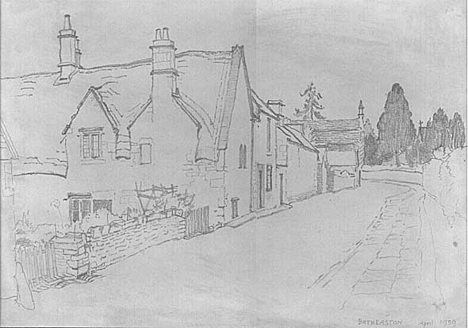

The changing plan of the village
Dobbie (1969, p.4) states that the village was originally nucleated with
an ancient centre of farmhouses clustered around the parish church and
surrounded by cultivated fields and pastures. With the development of
a market economy, the village spread southwards towards the commercial
High Street area and the village assumed its ultimate linear plan. It
is here, then, around the church, in the area now known as Northend, that
the oldest properties should be found. Indeed, the church is the oldest
structure in the village but it has no apparent fabric earlier than the
15th Century; the tower, of the “Winford generation”, was
probably built about 1458 (Wright, 1981, p.102). Otherwise no structure
older than the late 16th Century has been identified in the vicinity of
he church and this, appropriately enough, is Church Cottage, the former
homestead of Church Farm. Most of the village’s old farmhouses are
considerably removed from the village “centre”, mainly deep
in the St.Catherine’s valley. This may, of course, be the result
of past agricultural re-organisation. Batheaston never experienced an
enclosure movement in the sense of a traumatic change enforced by improving
landowners aided by a parliament highly representative of the landowning
interest. Enclosure appears to have been a piece-meal and poorly recorded
affair as land was exchanged between willing small landowners and tenants
to create compact holdings. The old village centre homesteads would have
been abandoned and fallen into decay as farmers built new homesteads on
their new compact holdings (Rowley, 1994, p. 118). Radford Farm (late
16th Century) and Upper Northend Farm (built about 1620-1630) and Old
House Farm could fit this pattern.
Alternatively, as suggested by R.J. Brown (1982, pp. 23-24), the ancient farmhouses of a nucleated village, such as Batheaston may have been, would have been close together with their frontages parallel to the road and occupying the full width of their sites. Such houses would have been small and relatively flimsy. Consequently, when they were replaced by more substantial houses of stone on the same sites in the late 16th or early 17th centuries the builders, of necessity, had to construct them gable end to the road. Greensleeves, Pine Cottage-Cherry Tree Cottage, the Thatched Cottages (2), now demolished, and Monks Rest, all near to the church, could fit this pattern.

2. “Thatched Cottages” as they appeared in a sketch of 1939. Demolished despite their listed status.
No trace of the “ancient” village is discernible, however, and one must be aware that “In many cases the relationship between the church and the village cannot be determined by observation or even documentation” (Rowley, 1994, p. 159). As it stands the survey of buildings at the junction of the High Street and Brow Hill has revealed a number of late 16th Century and early 17th Century properties (masked by late 17th to early 20th Century alterations and extensions) at least as old and as numerous as in Northend, and as important; possibly of regional importance. For example two properties in the Batch may have been originally built as one house in the early 17th Century, probably for a prosperous merchant, and it appears to have been designed as a “divided house”, that is accommodation for the owner on one side of the house and a branch of the family on the other side, the two sides being separated by an inter-communicating passage but each side with its own entry and staircase. Such houses are rare in England; “Englishmen find it difficult to share” (Colin Platt, 1994, p. 178).
However, no property older than about 1590 or so has yet been revealed. Batheaston properties appear to conform to the “Great Rebuilding ”, or, rather, “Rebuildings” thesis. Under the stimulus of economic, social and technological change from the late 16th Century the nation’s villages started to change and rebuild, a rebuilding temporarily checked by the Civil War but resumed on the Restoration in the late 17th Century and continuing in periods of activity ever since. What the village of Batheaston looked like before the late 16th - early 17th Century we do not know and may never know.
next page. (Agricultural, commercial and industrial buildings of Batheaston)